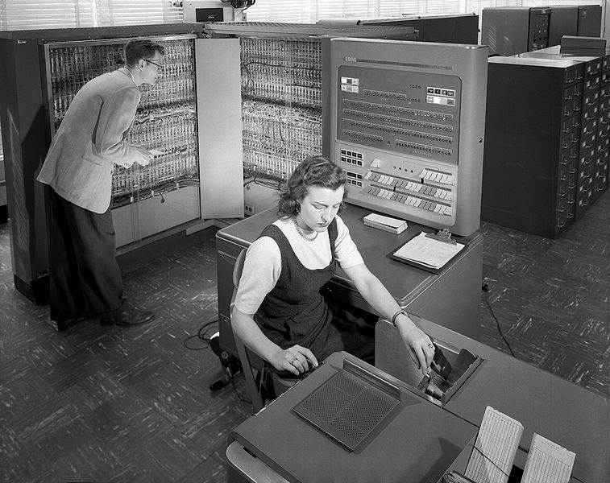

El principio de la historia de la programacion
el primer lenguaje de programación fue un algoritmo creado por Ada Lovelace en 1883.
Ada Lovelace creó eeste algoritmo para el motor analítico de Charles Babbage.
El propósito de este algrotmo era calculuar los números de Bernoulli.
En 1936, por primera vez, los códigos informáticos fueron especializados por Alonzo Church y Alan
Turing
Church expresó el cálculo lamda de forma formulativa.
Lenguaje de ensamblaje
Los primeros ordenadores mmodernos (alimentados eléctronicamente) fueron creados en los años 40.
Estas computadoras estaban limitadas en velocidad y memoria.
Debido a estas limitaciones, los programadores se vieron obligados escribir manualmente programas de
lenguaje ensamblador. Siendo un lenguaje de programación de bajo nivel, era una tarea difícil
programarlo manualmente. Los programadores se dieron cuenta entonces de la necesidad de lenguajes de
alto nivel para disminuir el esfuerzo que se requerpia para escribir los programas en lenguaje
ensamblador manualmente.


Los primeros lenguajes de programación
FORmulaTRANslation es el lenguaje de programación más antiguo y que continúa en uso. Creada por
John
Backus en 1954, esta herramienta fue desarrollada para la computación científica de alto nivel,
matemáticas y estadísticas.
A día de hoy, este lenjuagje se sigue usando pen la industria automovilística, aeroespacial
gubernamental y la investigación. Por ejemplo, es muy útil para el pronóstico de los servicios
meteorológicos.
En 1959 se desarrollo Cobol, que está detrás de la mayoría de los sistemas de transacciones de
negocio de lso procesos de las tarjetas de crédito, ATMs (Modo de Transferencia Asíncrona),
telefonía, sistemas hospitalarios, gobierno, sistemas automatizados y señales de tráfico.
El desarrollo de Cobol, creado por Grace Murray Hopper, muestra un lenguaje familiar y uniforme
para
transacciones empresariales. Por ejemplo, lo usan en el servicio postal estadounidense.
En1964 se creo Basic, que fue diseñado como un lenguaje simplificado para aquellos que no tenían
como base fuertes conocimientos técnicos o matemáticos.
entre 1969 y 1973 se crea C a manos de Dennis Ritchie para los laboratorios
Bell
Telephone para usarlos en el sistema Unix. Se le llamó «C» poque sus características derivaban
de un
lenguaje anterior llamado «B».
En los laboratorios Bells, Bjarne Stroustrup modificó el lenguaje C al C++, creando lo que
muchos
consideran el lenguaje de programación más popular que ha existido nunca. Además, ha sido
listado en
lo alto de los top ten de los lenguajes de programación desde 1986 y archivado en el Hall of
Fame en
2003. Hoy en día es usado por Firefox, Office y Adobe PDF Reader.
Esto dio el puntapie a que se sigan perfeccionado los lenguajes hasta llegar a los lenguajes de
hoy
en día.